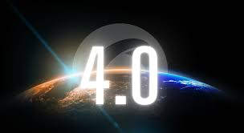

2016-2024
· Integración de tecnologías como la Inteligencia Artificial y la Voz como vehículo de intercomunicación.
· Concepto de la Web Total.
· 2020: Web 5.0, se centra en identificar las emociones por medio de los dispositivos productos o servicios.
· 2022: Los sitios web son más minimalistas pero al mismo tiempo más dinamicos.
· Propuestas a futuro: Web Sensorial, Web 6.0 y 7.0.
